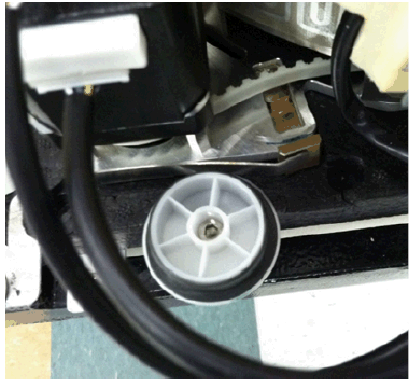
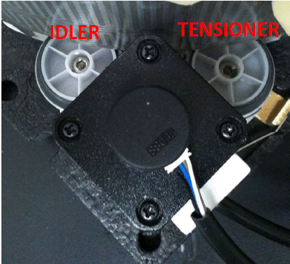
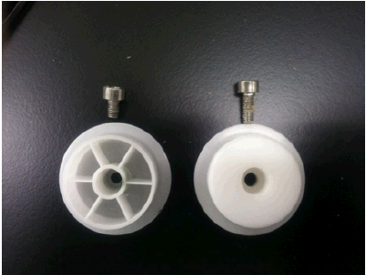
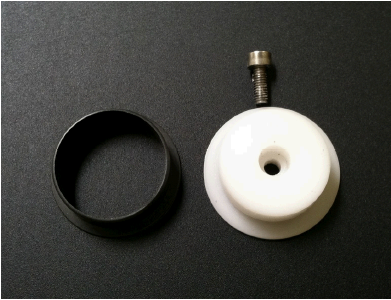
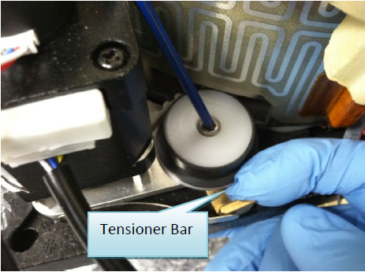
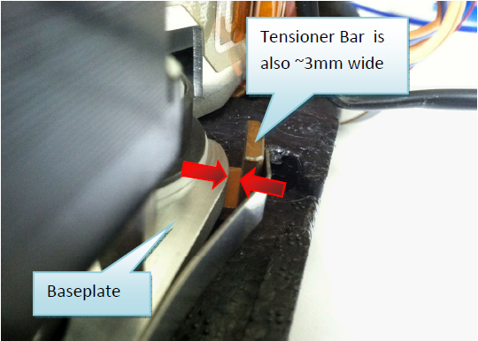
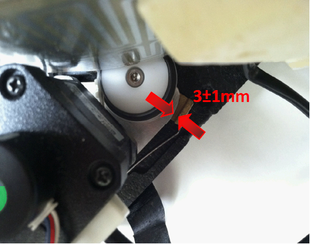

Parts and Materials Required
- Proper PPE
- Balled, 3 mm hex key
- Tape
- INCUBATOR PULLEY KIT (machined pulley + M4 x 6mm screw)
Time Required
- 90 minutes
Removal Procedure
|
|
MTUs may be present in module. It is necessary to remove all MTUs to avoid contamination. |
- Put on proper PPE.
- Start the Panther System main software.
- Remove all MTUs.
- Power down the Panther System.
- Open the Service Drawer.
- Remove the Mid Bay front panel.
- Remove the motor insulation cover and raise (or remove) the Incubator cover to expose the tensioner pulley. (Remove the electrical tape, if necessary.)
 Using a balled 3 mm hex key, remove the tensioner pulley.
Using a balled 3 mm hex key, remove the tensioner pulley.
Note—The idler pulley is an identical part and can be serviced using this procedure. 



Replacement Procedure
- Obtain a new pulley kit (new pulley and M4 x 10 screw).


- Using the original pulley bearing (grey), install the new pulley but do not tighten.Tip—Pull the tensioner bar outward to easily align the screw/pulley/tensioner assembly.

- Manually rotate the carousel and allow the auto-tensioning mechanism to achieve the proper belt/motor engagement. Ensure the gap between the tension bar and the baseplate is ≈ 3 ± 1 mm.
Note—It may be necessary to wiggle the tensioner assembly (using the brass tensioner bar) to ensure that the pulley is fully seated and not stuck.
Incubators must be at optimal temperature before any tensioning can happen.


- Finger-tighten the pulley in preparation for belt tensioning.
- Repeat tensioner pulley replacement for the other incubators.
- Complete the Incubator Belt Tensioning procedure.
 button at the top of the page to send feedback, comments, or change requests.
button at the top of the page to send feedback, comments, or change requests.{kind=link}